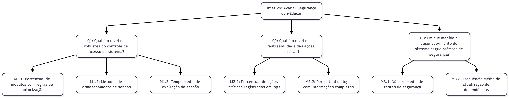

Medição 3 - Segurança
Objetivo de Medição 3 - Segurança
| Analisar | o i-Educar |
|---|---|
| Para o propósito de | Avaliar |
| Com respeito a | Segurança |
| Do ponto de vista da | Equipe de desenvolvimento |
| No contexto da | Disciplina de Qualidade de Software 1 (FCTE - UnB) |
Perguntas e Hipóteses de Medição
Questão 1: Mecanismos de Autenticação e Autorização
Qual é o nível de robustez do controle de acesso do sistema?
- Hipótese 1.1 (H1.1): Principais rotas (endpoints) com dados sensíveis terão pelo menos uma regra de autorização aplicada para cada papel de usuário.
- Hipótese 1.2 (H1.2): As senhas são armazenadas de com hashing e criptografia.
- Hipótese 1.3 (H1.3): Sessões de usuários são encerradas automaticamente após 60 minutos de inatividade.
Questão 2: Monitoramento e Auditoria
Qual é o nível de rastreabilidade das ações críticas?
- Hipótese 2.1 (H2.1): Pelo menos 70% das ações críticas (login, exclusão, alteração de dados) são registradas em logs.
- Hipótese 2.2 (H2.2): Mais de 60% dos logs incluem usuário, ação e data/hora.
Questão 3: Desenvolvimento Seguro
Em que medida o desenvolvimento do sistema segue práticas de segurança?
- Hipótese 3.1 (H3.1): O número total de testes de segurança é inferior a 10, indicando uma baixa cobertura de validação de segurança.
- Hipótese 3.2 (H3.2): Dependências externas são atualizadas pelo menos uma vez a cada 6 meses.
- Hipótese 3.3 (H3.3): Ferramentas de análise estática são executadas pelo menos antes de cada release.
Seleção das Métricas
Questão 1: Mecanismos de Autenticação e Autorização
- Métrica 1.1 – Percentual de rotas críticas com regras de autorização
-
Definição: Percentual de rotas (endpoints) críticas que possuem pelo menos uma regra de autorização aplicada para cada papel de usuário identificado.
- Coleta: Revisão do código fonte (ex: arquivos de rota, controllers) para identificar regras de autorização por rota.
- Pontuação de Julgamento:
Excelente Bom Regular Insatisfatório ≥ 90% 70% a 89% 40% a 69% < 40% - Propósito: Avaliar a abrangência do controle de acesso baseado em papéis.
-
Métrica 1.2 – Método de armazenamento de senhas
-
Definição: Verificação da presença de técnicas de hashing e criptografia no armazenamento das senhas.
- Coleta: Análise do código fonte do sistema de autenticação.
- Pontuação de Julgamento:
Conforme Não conforme Sim Não - Propósito: Confirmar a segurança no armazenamento de credenciais.
-
Métrica 1.3 – Tempo médio de expiração da sessão
-
Definição: Tempo configurado para encerramento automático das sessões por inatividade, em minutos.
- Coleta: Análise das configurações do sistema ou testes funcionais para medir o tempo de expiração.
- Pontuação de Julgamento:
Conforme Não conforme Menor ou igual a 60 Acima de 60 - Propósito: Verificar conformidade com a política de segurança de sessões.
Questão 2: Monitoramento e Auditoria
- Métrica 2.1 – Percentual de ações críticas registradas em logs
-
Definição: Percentual de eventos críticos (login, exclusão, alteração) que são registrados em logs.
- Coleta: Análise dos arquivos de log e documentação do sistema.
- Pontuação de Julgamento:
Excelente Bom Regular Insatisfatório ≥ 90% 70% a 89% 40% a 69% < 40% - Propósito: Avaliar a efetividade do monitoramento de eventos de segurança.
-
Métrica 2.2 – Percentual de logs com informações completas
-
Definição: Percentual de registros de log que incluem usuário, ação e data/hora.
- Coleta: Amostragem e análise dos registros de log.
- Pontuação de Julgamento:
Excelente Bom Regular Insatisfatório ≥ 80% 60% a 79% 40% a 59% < 40% - Propósito: Garantir a rastreabilidade adequada dos eventos registrados.
Questão 3: Desenvolvimento Seguro
- Métrica 3.1 – Densidade de testes de segurança (Testes/KLOC)
-
Definição: Quantidade de casos de teste relacionados à segurança, normalizada por mil linhas de código (KLOC) de produção.
- Coleta: 1. Identificar e contar o número total de testes de segurança na suíte.
- Contar o KLOC total do código de produção (ex:
cloc src/). - Calcular a densidade:
(Nº Testes de Segurança / (KLOC Total))
- Contar o KLOC total do código de produção (ex:
- Pontuação de Julgamento:
Excelente Bom Regular Insatisfatório > 1 > 0.5 > 0.1 ≤ 0.1 - Propósito: Avaliar a cobertura proporcional dos testes de segurança no projeto.
- Coleta: 1. Identificar e contar o número total de testes de segurança na suíte.
-
Métrica 3.2 – Frequência média de atualização de dependências
-
Definição: Intervalo médio, em meses, entre atualizações das dependências externas do projeto.
- Coleta: Análise do histórico de commits e arquivos de configuração de dependências.
- Pontuação de Julgamento:
Conforme Não conforme Atualização a cada ≤ 6 meses Atualização > 6 meses - Propósito: Verificar a manutenção do projeto em relação a vulnerabilidades conhecidas.
Critérios de Julgamento para Segurança
- Aceitável: ≥ 70% das métricas classificadas como "Bom" ou "Excelente". O sistema adere às boas práticas de codificação segura.
- Parcialmente aceitável: Entre 40% e 69% das métricas com nível "Regular" ou superior. Foram identificadas vulnerabilidades de baixo ou médio risco.
- Inaceitável: > 30% das métricas atingindo o nível "Insatisfatório". Existem vulnerabilidades críticas que comprometem a integridade ou a confidencialidade dos dados.
Relação entre a Segurança, Perguntas e Métricas
| Questão | Métricas Simplificadas | Tipo de Coleta |
|---|---|---|
| 1 – Autenticação e Autorização | Presença de autenticação; Perfis de usuário | Teste manual / Análise documental |
| 2 – Monitoramento e Auditoria | Existência de logs; Registro de falhas de login | Teste funcional / Observação |
| 3 – Desenvolvimento Seguro | Presença de testes; Frequência de atualização de dependências | Inspeção do repositório / Histórico de commits |
Diagrama GQM - Segurança (Representação Estrutural)
